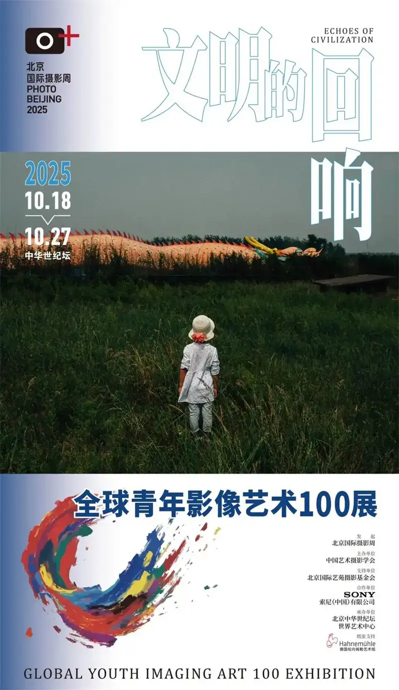
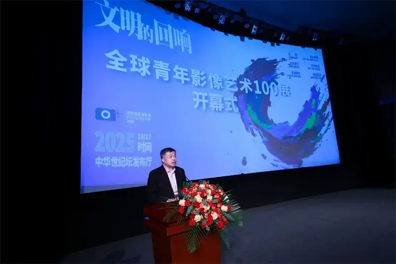
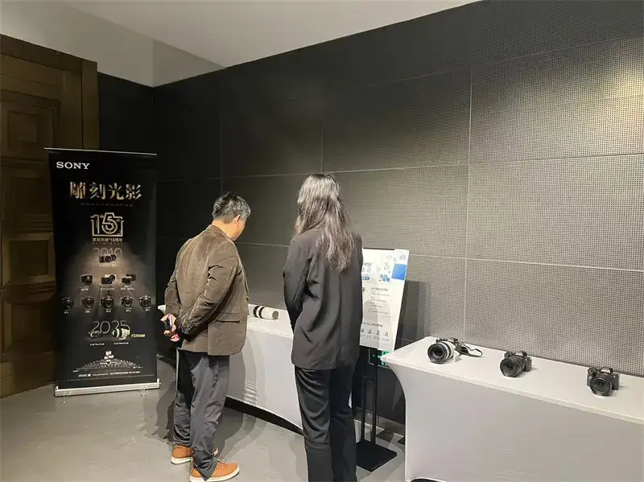
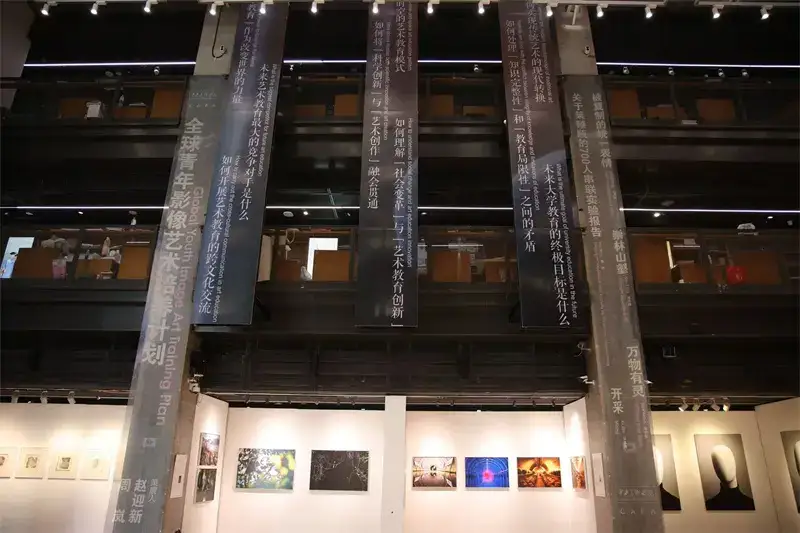
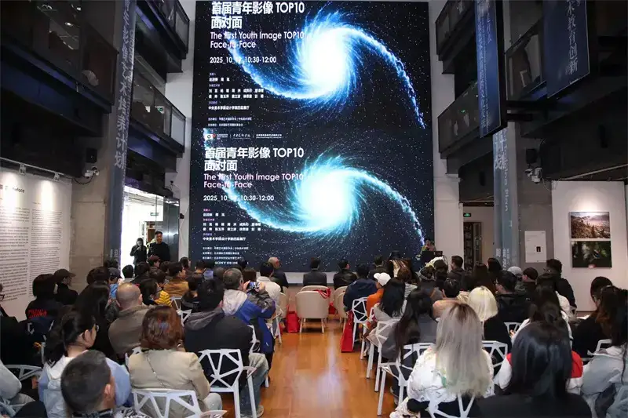
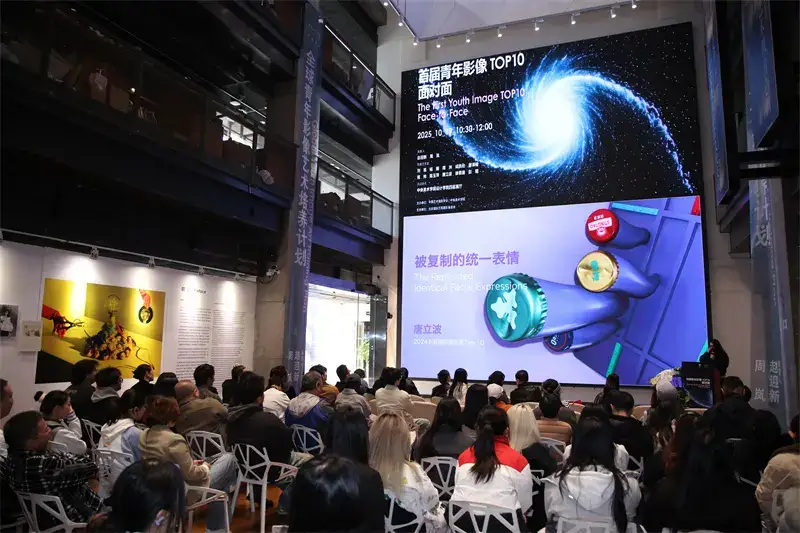
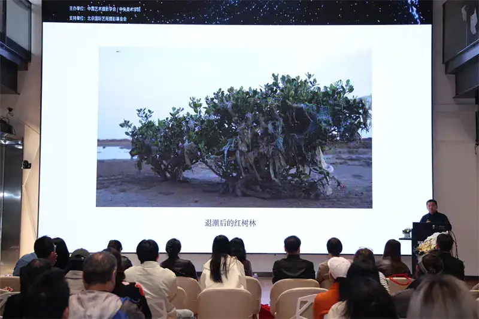

The 2025 Beijing International Photography Week has opened, and Sony took part deeply in its core events. Sony joined a rich, wide-ranging set of exhibitions and dialogues built around the Global Youth Image Art 100 and TOP10 Development Plan. The focus is the growth of young image art and of the people who make it. Through technology, resources, and a platform, Sony pushes the new exploration of youth image creation in the AI age, and shows its lasting support for the future of young image-makers.

Poster for Echoes of Civilization: Global Youth Image Art 100 exhibition
The Global Youth Image Art 100 and TOP10 Development Plan, of which Sony is a partner, has reached its second edition. It was started in 2024 by Beijing International Photography Week and hosted by the Chinese Art Photography Society and the Beijing International Art Salon Photography Foundation. This year, with the theme Echoes of Civilization, it invited image artists aged 18 to 45 worldwide to submit work, selected 100 pieces for the show, and chose 10 young artists to support and fund. After two months of open call, the 100 works are shown at this Photography Week, and a series of opening events for the second Youth Image 100 exhibition was held on October 17.
Young talent sets sail: the future of images in the AI age
The opening of the Youth Image 100 exhibition had three parts: a ceremony, a dialogue, and a tour. Zhao Yingxin, Artistic Director of Beijing International Photography Week, hosted it. Guests included Yang Yuanxing, chair of the Photography Week organizing committee and honorary lifetime chair of the Chinese Art Photography Society; Wang Jianqi, Zhong Weixing, and Zhang Xiaosu, vice chairs of the Chinese Art Photography Society; Lan Hongguang, vice chair of the organizing committee and president of the China Press Photography Society; Yang Hongbao, vice chair of the organizing committee and vice chair of the Beijing Photographers Association; and Li Tun, senior director of Imaging Solutions Marketing at Sony China's Electronics Division.
Zhao Yingxin, Artistic Director of Beijing International Photography Week, gives the opening address.
Zhong Weixing, vice chair of the Chinese Art Photography Society and Artistic Director of Chengdu International Photography Week, spoke first. He warmly congratulated the selected young artists and stressed that young people are a key force in carrying on and renewing art. He hopes they keep the truth of art amid the challenges of the digital age and keep making work with value for the times.
Li Tun, senior director of Imaging Solutions Marketing at Sony China, also spoke at the ceremony. He congratulated the selected young image artists. Images can cross the gaps of language and culture and even become the most powerful language of the age, he said, and young image artists are its liveliest, most imaginative voices. He stressed that this year marks the 15th anniversary of Sony's mirrorless cameras. For 15 years, Sony has held that imaging technology should serve creative freedom. Sony will keep walking with creators, especially the young, and keep giving them gear, development plans, and imaging contests to help them grow. Technology empowers creativity, and images light up dreams and connect the world.

Li Tun, senior director of Imaging Solutions Marketing, Sony China.
After the speeches, Director Zhao Yingxin announced the TOP10 winners among the selected Youth Image 100 artists.
Yang Yuanxing, chair of the organizing committee, poses with the TOP10 winners.
After Wang Jianqi, vice chair of the Chinese Art Photography Society, declared the exhibition open, the event moved to a deeper discussion: a dialogue on the creation and growth of young image art in the AI age. The dialogue ran for two hours, in a warm room with a lively exchange of ideas. Many young artists got targeted advice from the judges and guests, and the audience felt the shape of the new image language.

The Sony imaging product experience zone on site.
Beijing International Photography Week opened in style, and Sony attended to present awards to theTOPTOP10.
Beijing International Photography Week opened on October 18, 2025. Its academic theme is Image: Civilization and New Quality. It keeps an international, professional, academic, and diverse character, with more than 10 dialogues and 50 exhibitions running through October 27. On the morning of October 18, the opening ceremony was held at the China Millennium Monument in Beijing.
Zhang Yi, director of Marketing at Sony China's Electronics Division, presented the TOP10 young artists with the award certificates of the second Global Youth Image Art 100 and TOP10 Development Plan and a full set of Sony imaging gear. This honor recognizes their artistic achievement and carries Sony's hope that young creators explore the future. The prize is the roughly 61-megapixel Sony Alpha 7CR, which joins high image quality, light weight, and professional reliability. It comes with the compact, high-performance FE 24-50mm F2.8 G lens and a durable TOUGH memory card, to be a ready partner for free creation and to help artists push the bounds of imagination and turn inspiration into moving visual stories.

Zhang Yi, director of Marketing at Sony China, presents the awards.
Extending the academic field and deepening the ecology of young creation
The discussion and display of young images did not stop at the Millennium Monument. It reached the Central Academy of Fine Arts, a leading Chinese art school, where the first Youth Image TOP10 review show ran from October 13 to 20.

At the first Youth Image TOP10 review show.
On the morning of October 19, a first Youth Image TOP10 face-to-face event was held at the review show. Present were Li Ge, president of the China Photographers Association and chair of the Photography Week organizing committee; Zhong Weixing, vice chair of the Chinese Art Photography Society; Lyu Pinjing, member of the Party Committee and vice president of the Central Academy of Fine Arts; and Liu Dongyang, director of Product Marketing at Sony China's Imaging Solutions Marketing. They met with the TOP10 artists of both editions and with the faculty and students of the academy. In this strong academic setting, the event deepened the discussion and support for young image creation.

At the first Youth Image TOP10 face-to-face event.
The Sony imaging product experience zone on site.
Liu Dongyang, director of Product Marketing at Sony China, spoke for Sony. He warmly congratulated the selected artists and affirmed the value of young creators in moving image art forward. Supporting the growth of young creators has long been a core mission of Sony's imaging work. With the 15th anniversary of its mirrorless cameras, Sony keeps using innovative technology to improve the creative experience. To encourage artistic exploration, Sony gave the TOP10 of both editions a creative fund and a full set of Sony shooting gear. In the future, Sony will keep improving the imaging ecosystem and, with partners in the field, give young creators full support from inspiration to result, and push the deep meeting of technology and art. Sony looks forward to widening the bounds of image art with creators and building a strong future together.
Liu Dongyang, director of Product Marketing at Sony China, gives his address.
The TOP10 winners of the first and second editions shared their own artistic ideas, the progress of their projects, and the insights and challenges of their exploration.

Tang Libo, a first-edition TOP10 artist, shares his creative process.

Zhao Ming, a TOP10 artist across both editions, shares his creative process.
The review show and dialogue at the Central Academy of Fine Arts not only confirm the work of the TOP10 artists again. They also place the discussion of young images in an academic frame, deepen the exchange among industry, academia, and creation, and support a healthy, sustainable ecology for young image work.
Sony: empowering art with technology and supporting the future of images
As a key partner of the Global Youth Image Art 100 and TOP10 Development Plan, Sony is glad to grow with many promising young creators and watch them turn their view of the times into deep, warm visual expression. Sony believes images are not only a tool of record and expression. They link personal feeling with the spirit of the age and carry the emotional resonance that crosses language and place.
This year marks the 15th anniversary of Sony's mirrorless cameras. Since the first NEX-5C in 2010, Sony mirrorless cameras have redefined the tools of image creation. Sony has released the second-generation flagship Alpha 1 II, the speed flagship Alpha 9 III, and the resolution flagship Alpha 7R V,
the video flagship Alpha 7S III, the compact Alpha 7C II, and more than 80 native E-mount lenses, pushing the whole creative ecosystem forward. Sony holds its mission to move the world with the power of creativity and technology. This is the spirit behind 15 years of mirrorless innovation that aims to empower every creator. Over these years, Sony has watched countless young artists use Sony mirrorless gear to turn inspiration into moving work. Sony has long followed the meeting of art and technology, giving young creators professional imaging gear and building open, diverse platforms for exchange. Sony looks forward to walking with every creator who holds an imaging ideal, helping them push the bounds of expression and make the leap from inspiration to work.
A classic family photo of Sony mirrorless cameras.
Sony values the uniqueness of creation and looks forward to exploring more of visual storytelling with young creators in the new chapter opened by mirrorless technology. In the future, Sony will keep building a more supportive creative ecosystem, help the new generation of image-makers onto a wider world stage, record the times with the lens, and light up the future with images.
The exchange and inspiration of images continues. To widen creative vision and share frontline imaging experience, Sony will hold a special photography lecture on October 26 at the China Millennium Monument. Sony is glad to welcome the noted Chinese aerial photographer Liu Jun. As an artist who has long worked in special viewpoints, Liu will draw on his rich aerial practice and share, around high-altitude framing, light capture, and dynamic storytelling, how he uses Sony imaging gear to turn the vast world into striking, moving images.